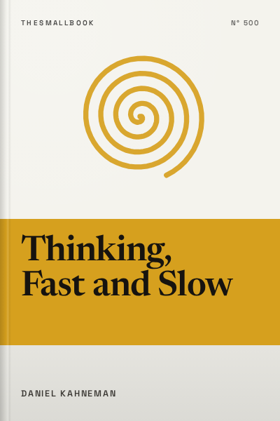
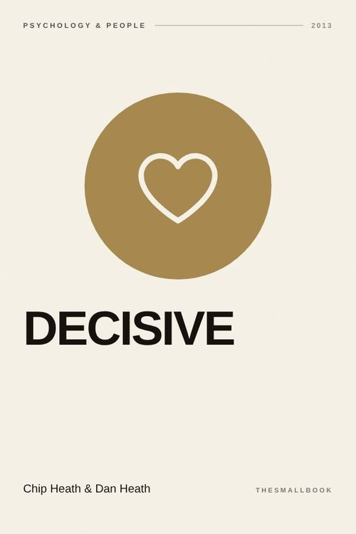

Library › Ask the Library › How do I stop overthinking?
How do I stop overthinking?
The short answer
Overthinking is avoidance disguised as analysis, you're 'thinking' to avoid deciding. Set a decision deadline, write the options with their trade-offs, choose, and refuse to revisit until the evidence changes. A good decision made now beats a perfect one made never.
The books behind the answer

Thinking, Fast and Slow
Daniel Kahneman · 2011 · 8 min · 6 lessons
Your fast, intuitive System 1 runs your life; your slow, rational System 2 mostly just approves its drafts. Know when to override.
- System 1 and System 2: Know when to trust the fast gut and when to slow down, most loops are the slow system spinning.

Decisive
Chip Heath & Dan Heath · 2013 · 8 min · 6 lessons
Your decisions are sabotaged by four villains - widen your options, reality-test, attain distance, prepare to be wrong.
- Prepare to Be Wrong: Make the decision reversible in your mind, options shrink, choices clarify.

The Subtle Art of Not Giving a F*ck
Mark Manson · 2016 · 9 min · 7 lessons
The desire for more positive experience is itself a negative experience. Choose your struggles instead of avoiding them.
- The Backwards Law: The more you chase certainty, the more it runs, accept the risk, decide anyway.
Questions people ask next
Can I read this in Hindi?
Yes. This answer is written in simple English. Open any linked book and choose Hindi or Hinglish to read the full lessons in your language, with audio where available.